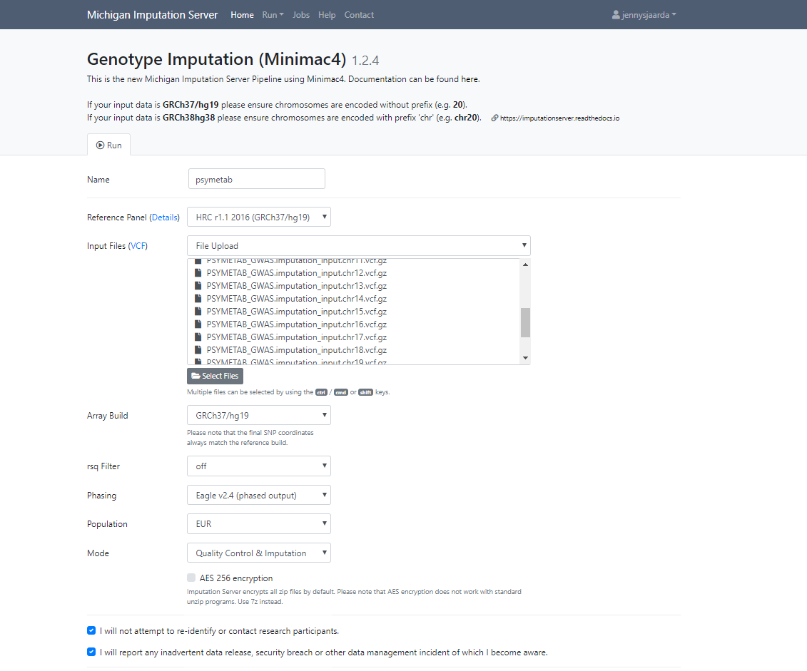

Last updated: 2019-12-02
Checks: 7 0
Knit directory: PSYMETAB/
This reproducible R Markdown analysis was created with workflowr (version 1.5.0). The Checks tab describes the reproducibility checks that were applied when the results were created. The Past versions tab lists the development history.
Great! Since the R Markdown file has been committed to the Git repository, you know the exact version of the code that produced these results.
Great job! The global environment was empty. Objects defined in the global environment can affect the analysis in your R Markdown file in unknown ways. For reproduciblity it’s best to always run the code in an empty environment.
The command set.seed(20191126) was run prior to running the code in the R Markdown file. Setting a seed ensures that any results that rely on randomness, e.g. subsampling or permutations, are reproducible.
Great job! Recording the operating system, R version, and package versions is critical for reproducibility.
Nice! There were no cached chunks for this analysis, so you can be confident that you successfully produced the results during this run.
Great job! Using relative paths to the files within your workflowr project makes it easier to run your code on other machines.
Great! You are using Git for version control. Tracking code development and connecting the code version to the results is critical for reproducibility. The version displayed above was the version of the Git repository at the time these results were generated.
Note that you need to be careful to ensure that all relevant files for the analysis have been committed to Git prior to generating the results (you can use wflow_publish or wflow_git_commit). workflowr only checks the R Markdown file, but you know if there are other scripts or data files that it depends on. Below is the status of the Git repository when the results were generated:
Ignored files:
Ignored: .drake/config/
Ignored: .drake/data/
Ignored: .drake/drake/
Ignored: .drake/keys/
Ignored: .drake/scratch/
Ignored: data/processed/
Ignored: data/raw/
Untracked files:
Untracked: analysis/QC/
Staged changes:
New: .drake/.gitignore
New: pre_imputation_qc.log
New: pre_imputation_qc.out
New: qc_part1.out
New: slurm_clustermq.tmpl
Note that any generated files, e.g. HTML, png, CSS, etc., are not included in this status report because it is ok for generated content to have uncommitted changes.
These are the previous versions of the R Markdown and HTML files. If you’ve configured a remote Git repository (see ?wflow_git_remote), click on the hyperlinks in the table below to view them.
| File | Version | Author | Date | Message |
|---|---|---|---|---|
| Rmd | 49a7ba9 | Sjaarda Jennifer Lynn | 2019-12-02 | modify git ignore |
Last updated: 2019-12-02
Code version: 49a7ba9b5f838a8e00b9e1b4e9faea44e2341d77
To reproduce these results, please follow these instructions.
All processing scripts were run from the root sgg directory.
Project was initialized using workflowr rpackage, see here.
project_name <- "PSYMETAB"
library("workflowr")
wflow_start(project_name) # creates directory called project_name
options("workflowr.view" = FALSE) # if using cluster
wflow_build() # create directories
options(workflowr.sysgit = "")
wflow_publish(c("analysis/index.Rmd", "analysis/about.Rmd", "analysis/license.Rmd"),
"Publish the initial files for myproject")
wflow_use_github("jennysjaarda")
# select option 2. Create the remote repository yourself by going to https://github.com/new and entering the Repository name that matches the name of the directory of your workflowr project.
wflow_git_push()You have now successfully created a github repository for your project that is accessible on github and the servers. Next setup a local copy.
Within your terminal clone the git repository.
cd ~/Dropbox/UNIL/projects/
git clone https://github.com/jennysjaarda/PSYMETAB.git PSYMETABOpen project in atom (or preferred text editor) and modify the following files:
workflowr doesn’t like the sysgit, to the .Rprofile file, add:
options(workflowr.sysgit = "")options("workflowr.view" = FALSE).gitignore file, by adding the following lines:
data/*!analysis/*.Rmd!data/*.mdproject_dir=/data/sgg2/jenny/projects/PSYMETAB
mkdir $project_dir/data/raw
mkdir $project_dir/data/processed
mkdir $project_dir/data/raw/reference_files
mkdir $project_dir/data/raw/phenotype_data
mkdir $project_dir/data/raw/extraction
mkdir $project_dir/data/processed/phenotype_data
mkdir $project_dir/data/processed/extraction
mkdir $project_dir/docs/assetsThis will create the following directory structure in PSYMETAB/:
PSYMETAB/
├── .gitignore
├── .Rprofile
├── _workflowr.yml
├── analysis/
│ ├── about.Rmd
│ ├── index.Rmd
│ ├── license.Rmd
│ └── _site.yml
├── code/
│ ├── README.md
├── data/
│ ├── README.md
│ ├── raw/
| ├── phenotype_data/
| ├── reference_files/
| └── extraction/
│ └── processed/
| ├── phenotype_data/
| ├── reference_files/
| └── extraction/
├── docs/
| └── assets/
├── myproject.Rproj
├── output/
│ └── README.md
└── README.mdRaw PLINK (ped/map files) data was copied from the CHUV L/ folder after being built in genomestudio.
 #OR
knitr::include_graphics(“assets/external.png”)
wflow_open(“analysis/explore_pheno_data.Rmd”)
Most steps are saved in shell scripts. This code should be able to run in any Unix-like environment (of course after installing the necessary software). To process the data efficiently on our HPC, we wrote a wrapper script, submit-array.sh, to combine the many parallel jobs into one array job submitted to the Sun Grid Engine (SGE) scheduler. Not only does this make it easier for the scheduler (and you) to manage thousands of tasks, we also made it so that it won’t re-run jobs if the output file already exists. This is convenient when a small fraction of jobs fail and need to be re-run. However, if your HPC uses a scheduler other than SGE, you will have to decide how best to submit the jobs.
sessionInfo()
# R version 3.6.1 (2019-07-05)
# Platform: x86_64-conda_cos6-linux-gnu (64-bit)
# Running under: CentOS Linux 7 (Core)
#
# Matrix products: default
# BLAS/LAPACK: /data/sgg2/jenny/bin/anaconda3/envs/r_env/lib/R/lib/libRblas.so
#
# locale:
# [1] LC_CTYPE=en_US.UTF-8 LC_NUMERIC=C
# [3] LC_TIME=en_US.UTF-8 LC_COLLATE=en_US.UTF-8
# [5] LC_MONETARY=en_US.UTF-8 LC_MESSAGES=en_US.UTF-8
# [7] LC_PAPER=en_US.UTF-8 LC_NAME=C
# [9] LC_ADDRESS=C LC_TELEPHONE=C
# [11] LC_MEASUREMENT=en_US.UTF-8 LC_IDENTIFICATION=C
#
# attached base packages:
# [1] stats graphics grDevices utils datasets methods base
#
# loaded via a namespace (and not attached):
# [1] workflowr_1.5.0 Rcpp_1.0.1 rprojroot_1.3-2 digest_0.6.18
# [5] later_0.8.0 R6_2.4.0 backports_1.1.4 git2r_0.26.1
# [9] magrittr_1.5 evaluate_0.13 stringi_1.4.3 fs_1.3.1
# [13] promises_1.0.1 whisker_0.3-2 rmarkdown_1.12 tools_3.6.1
# [17] stringr_1.4.0 glue_1.3.1 httpuv_1.5.1 xfun_0.6
# [21] yaml_2.2.0 compiler_3.6.1 htmltools_0.3.6 knitr_1.22